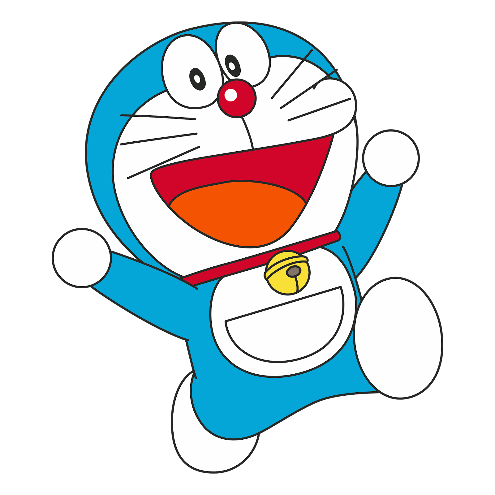
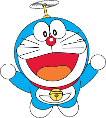
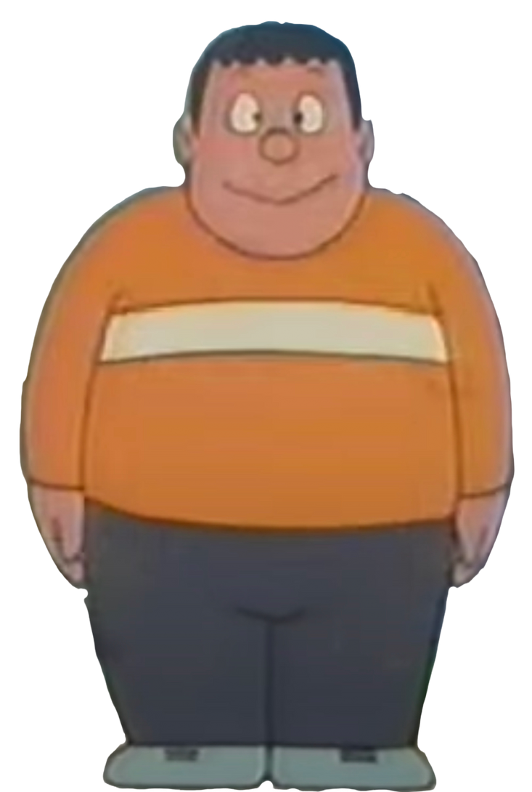
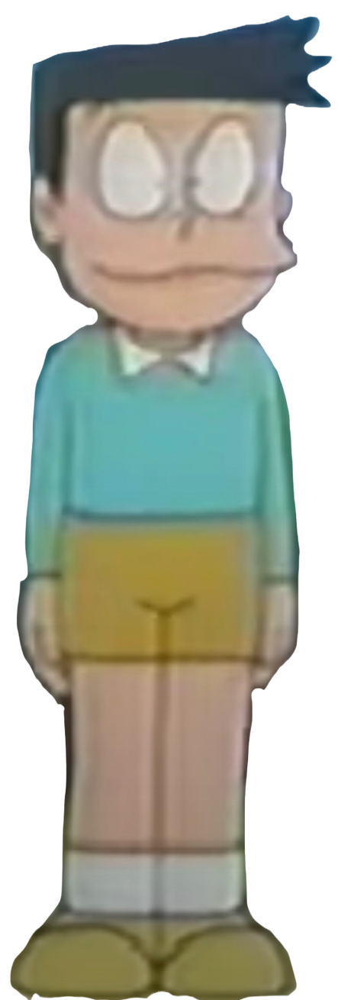
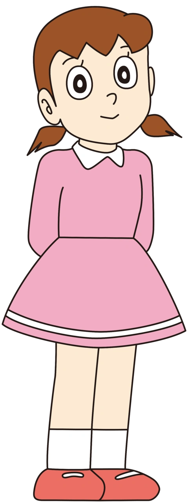

Doraemon (ドラえもん) is a Japanese manga and anime series and franchise about the character Doraemon. It was written and illustrated by Fujiko Fujio and Kazuya Tsurumaki. It was started in a children’s magazine in 1969. Doraemon is the name of a robot cat that came from the future to help a boy named Nobita Nobi. Doraemon is about the life of Nobita Nobi. In a typical story Doramon uses a gadget to solve a problem for Nobita, but Nobita goes too far and ends up being punished and learning a lesson.
Doraemon was turned into an anime television show in 1979. It still is being shown on television. As of 1996, about 100 million comic books have been sold. A Japanese-to-English version of the original called Doraemon: Gadget Cat from the Future was published from 2002. A local translation is published in each Asian country such as Hong Kong, Taiwan, Korea and Vietnam. It is in the United States, Canada, the United Kingdom, and Australia, but it is not as popular as it is in Asia. Doraemon is endorsed by 7-11 in Thailand as a mascot.
Doraemon was a yellow cat with nice fluffy ears and he lived in the future but when robot mice ate his ears while he was sleeping, he was forced to remove the part of the ear that was left. He cried so much that the chemical in his tears reacted with his skin turning to blue from yellow. He was then forced to come to the present age to help Nobita but soon, he started loving Nobita like his own brother.
| S. No. | Name | Description | Photo |
|---|---|---|---|
| 1 | Doraemon | Neela Billa |  |
| 2 | Nobita Nobi | |
|
| 3 | Gian Goda | Besura Mota Rakshas |  |
| 4 | Suneo Onikawa | Tedha Mooh |  |
| 5 | Shizuka Minamoto | Besuri violinist |  |